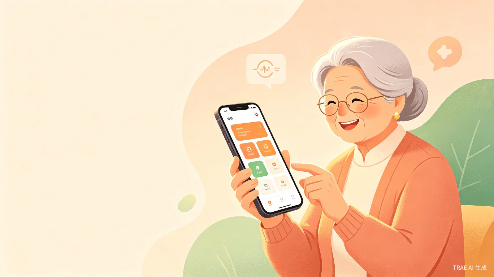
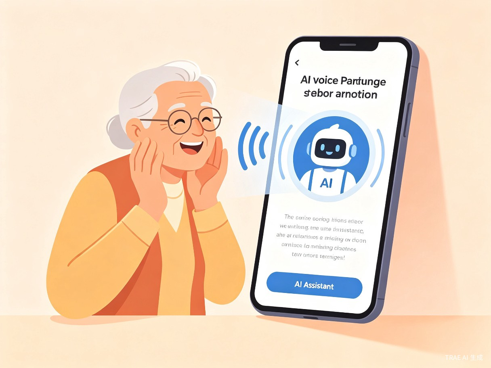
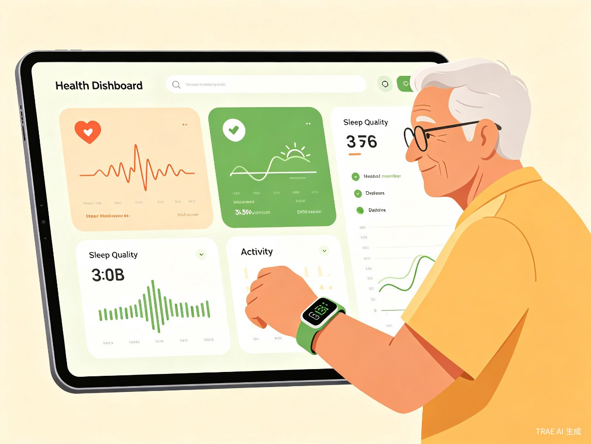
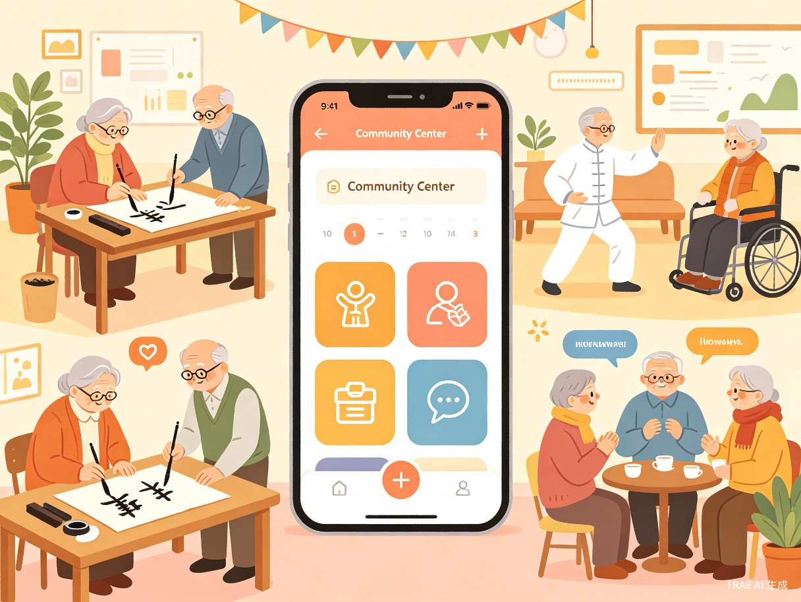

银龄伴
AI驱动的老年人数字生活陪伴与健康管理小程序
让每一位长辈都能享受智能时代的温暖与便利
银龄伴 — 用AI温暖银发生活
想解决什么问题：中国60岁及以上人口已突破3.23亿，其中空巢老人达1.18亿。65%的老年人面临智能产品操作复杂的问题，数字鸿沟日益加深。同时，约5300万认知障碍患者和4000万失能老人亟需健康管理支持，而现有产品要么功能单一，要么操作门槛过高。
为什么会想到做这个：在走访社区时，我们发现许多老年人拥有一部智能手机却只会打电话和刷短视频。他们渴望融入数字生活，却苦于没有一款真正"适老化"的产品。同时，子女在外工作无法时刻陪伴，对父母的健康和安全充满担忧。我们希望用AI技术搭建一座桥梁，连接老年人的需求与数字世界的便利。
产品形态：微信小程序 — 无需下载App，老年人通过微信即可直接使用，大幅降低使用门槛。
微信小程序
零下载门槛，微信即开即用
大字体、语音交互、极简操作
银发经济，万亿蓝海
银发经济正以每年15%以上的增速扩张，智慧养老与健康服务市场2026年将超1万亿元。高龄老人一旦接触AI，使用黏性反而更强——71-75岁组"每天经常用"的比例高达46.58%。市场处于高速增长期，而真正适老化的产品供给严重不足。[1]
谁需要银龄伴？
核心用户：60岁以上城市社区老年人
以独居或空巢老人为主，子女不在身边，日常使用智能手机但仅限于基础功能。他们渴望社交陪伴、关注自身健康，但面对复杂App感到无从下手。
次要用户：在外工作的子女
30-50岁的中青年群体，关心父母健康与生活状态，但因工作繁忙无法时刻陪伴。他们需要一个能远程了解父母状况、异常时及时预警的工具。
核心痛点
🔒 数字鸿沟
65%老年人觉得智能产品操作复杂，现有App界面繁琐、字体小、步骤多，导致"不会用、不敢用、不想用"。
😢 孤独感强
1.18亿空巢老人缺乏日常陪伴，AI能排解"无聊"却难化解"孤独"，缺乏有温度的深度互动。
💊 健康焦虑
75%老年人患有一种及以上慢性病，健康数据分散在多个设备中，缺乏整合式管理和异常预警。
🤝 社交断裂
社区活动信息不对称，老年人"不知道有什么活动"，参与率低，社交圈日益缩小。
⚠️ 安全隐患
74.98%老年人担忧隐私与安全风险，47.91%担忧财产损失，对智能产品缺乏信任感。
🧠 认知衰退
约5300万认知障碍患者缺乏早期筛查工具，错过最佳干预时机，子女也难以察觉早期信号。
四大核心模块，全方位守护银发生活

AI语音陪伴 + 认知训练
基于大模型的语音对话系统，支持方言识别，融入认知训练游戏（记忆训练、计算游戏），在自然聊天中完成认知障碍早期筛查。不是冰冷的机器人，而是有温度的"虚拟陪伴者"。

家庭健康仪表盘
对接智能手环/手表数据，实时监测跌倒预警、心率、睡眠等指标。整合子女端推送，异常时自动通知家人和社区。用大字体、可视化图表呈现，让老年人一目了然。

社区活动发现器
基于地理位置推送社区老年大学、文化活动、邻里节等信息，支持一键报名和日历提醒。解决"不知道有什么活动"的信息不对称问题，帮助老年人重建社交圈。
银发宠物照料助手
针对60岁以上养宠人群，提供一键式简化界面，集成智能喂食器/摄像头控制、宠物健康提醒（喂食、驱虫、疫苗）、附近宠物医院查询，解决银发宠主的操作困难。人宠共伴，温暖加倍。
银龄伴融入日常生活的每个时刻
🌅 清晨 7:00 — 健康晨报
张奶奶打开微信小程序，银龄伴自动推送今日天气、健康提醒（"该量血压了"）和社区活动预告。语音播报功能让她无需看屏幕即可了解信息。
☕ 上午 10:00 — AI聊天 & 认知训练
独居的李爷爷和银龄伴AI助手聊起了年轻时的故事。AI在对话中自然穿插记忆小游戏，后台默默记录认知评分。子女端收到"爸爸今天状态不错"的推送。
🏥 下午 3:00 — 异常预警
王大爷的手环检测到心率异常，银龄伴立即推送预警至子女手机和社区服务中心。社区工作人员10分钟内上门查看，避免了一场健康危机。
🎉 周末下午 — 社区活动
赵奶奶通过银龄伴发现社区下午有书法课，一键报名后收到提醒。她在书法课上认识了同小区的邻居，社交圈逐渐扩大，孤独感明显减少。
商业价值与社会价值并重
商业价值
银发经济2026年将突破10.8万亿元，智慧养老与健康服务市场超1万亿元。老年人专用看护摄像头销量同比增长超20%，市场处于高速增长期。
商业模式：基础功能免费（语音陪伴、认知训练、活动信息）吸引用户；增值服务包括家庭健康报告订阅（月费9.9元）、宠物健康顾问在线咨询（单次19.9元）；B端与社区养老服务中心合作收取服务对接费；适老化硬件套餐销售。
社会价值
缓解1.18亿空巢老人的孤独问题，降低5300万认知障碍患者的早期发现门槛，帮助老年人跨越数字鸿沟。79.1%的老年人最渴望免费AI培训，银龄伴正是以"用即学"的方式实现技术普惠。
效率提升：通过AI自动化健康监测和异常预警，减少子女的焦虑时间和社区人工巡查成本。社区活动一键发现和报名，将活动参与率从52.7%提升至预期70%以上。
从MVP到生态平台
Phase 1
MVP核心功能
AI语音陪伴 + 健康数据对接
社区活动信息聚合
Phase 2
认知训练模块
子女端App/小程序
宠物照料助手
Phase 3
B端社区合作
硬件套餐销售
健康报告订阅服务
Phase 4
开放平台生态
第三方服务接入
全国社区覆盖